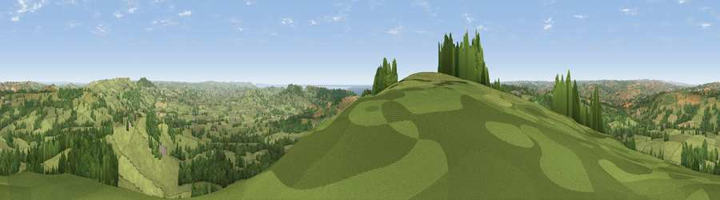

Viewpoint near Marshwood
#4033 in England · top 10% of its area beats it · near Marshwood · path 89 mWhere it is
The exact computed spot (SY 37275 99175). Click the marker for map links.
Public access: the nearest public right of way is about 89 m away — the final stretch may cross private land. Computed from Natural England's CRoW access layer and OpenStreetMap rights of way — not the legal definitive map. Always verify locally.
The view, rendered

A 360° render of this exact spot computed from the terrain model, tree cover and land cover — summer colours, afternoon light, calibrated against photographs of famous viewpoints. Real trees, hedges and buildings will differ in detail.
The panorama
Grey silhouette: terrain skyline in each direction (720 bearings, Earth curvature and refraction included). Dashed green: skyline with trees (+15 m) and buildings (+8 m) as obstacles. Blue strip: how far the ground is visible on each bearing.
Where the view opens
Wedge length = distance to the farthest visible ground on that bearing (vegetation-aware). Rings at 10, 25 and 50 km.
What fills the view
74% grassland · 21% woodland · 4% cropland · 1% water ·
Angular shares of the visible panorama (visual magnitude), not map area. Landscape diversity 0.33 (0–1 Shannon).
Key numbers
More beautiful places nearby
The staircase of upgrades: each row has a higher view potential than everything closer. Driving times are estimates from straight-line distance, calibrated against real road routing — check an actual route before setting out.
| Place | Direction | Drive | Score |
|---|---|---|---|
| Lambert's Castle Hill | SSW · 0 km | ~1 min | 78.7 |
| Viewpoint near Burstock | ENE · 5 km | ~10 min | 81.8 |
| Lewesdon Hill | ENE · 7 km | ~14 min | 83.3 |
| Viewpoint near North Chideock | SSE · 8 km | ~16 min | 87.1 |
| Golden Cap | SSE · 8 km | ~16 min | 88.7 |
| The Knoll | SE · 20 km | ~34 min | 91.0 |
50.78874, -2.89122 · source: screening · position refined by local search. Computed location — check access rights before visiting.